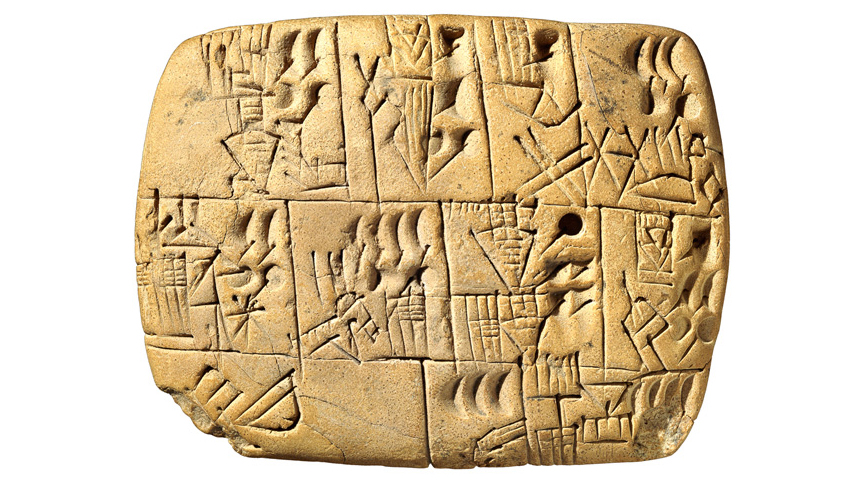

In 2018, around 32 million American adults were illiterate. In 2018, there
were also 327.2 million Americans living in the United States, which means
that around 9% of Americans were illiterate at the time. Even in literate
societies, writing does not come naturally.
In fact, writing is a development that came relatively recently when
compared to the advent of human language. Writing has only really
developed around five thousand years ago, with the earliest being
Mesopotamian cuneiform. Most languages are not written, even today.
But as different writing and speech are, they still share something in
common: speech shares an arbitrary link between sound and meaning, and
writing shares an arbitrary link between symbol and sound. Linguists call
the set of conventions for writing down language it's
orthography, and they can be grouped into two basic types.
Types of Writing
Logographic
In a logographic writing system, symbols (logograms) represent actual
morphemes or even entire words.
It's the oldest type of writing, going all the way back to Ancient
Mesopotamiam cuneiform, Egyptian hieroglyphs and early Chinese
characters.
Nearly all writing systems today are part logographic in that they
make use of abbreviations like &, %, $, or even numbers like 1, 2, 3,
and the rest. One can even say that logographic systems can even be
read independently from their original language, so long as you
understand the meaning.
Phonographic
In a phonographic writing system, symbols represent syllables or
phonemes. There are two categories of phonographic writing systems:
syllabic and alphabetic.
Syllabic
Perhaps the most commonly known example of a syllabic writing
system would be Japanese hiragana, each of which represent a
single, discrete syllable. A set of syllabic signs is called a
syllabary.
Alphabetic
In an alphabet, signs represent consonant and vowel segments, and
among alphabets you can have two distinctions: abjads and
abugidas.
In an abjad writing system, like in Arabic and Hebrew, vowels are
either completely absent or are optionally expressed with the help
of something called a diacritic.
In an abugida writing system, all vowels are represented. But,
they are marked by diacritics or modifications to the consonants.

Cuneiform is logographic, but it started out as pictograms that were
rotated and moved around for the ease of scribes and scholars at the time.
A drawing of a grain would get simpler and therefore more abstract over
time in order to speed up the writing process.
Priests, who used the records to run massive stockpiles in ancient
temples, learned to read from top to bottom— like a scroll.